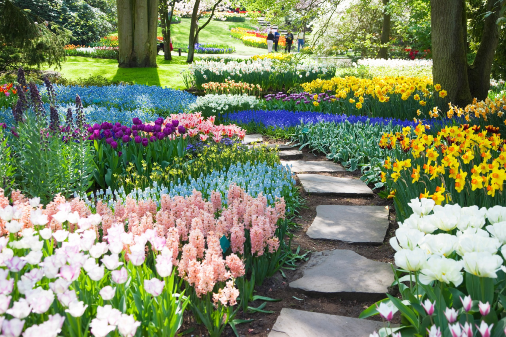

🌱 Become a Volunteer
Love spending time in the gardens? Why not volunteer during our events? Assist with organising, decorating, or guiding tours. It’s a great way to give back to the community and meet fellow garden enthusiasts.
Sign Up to Volunteer
📅 Discover Exciting Events at Tramore Square Gardens
There’s always something happening at Tramore Square Gardens! From seasonal festivals and themed garden tours to workshops and family fun days, our events are designed to inspire, educate, and entertain visitors of all ages. Whether you’re a gardening enthusiast, a music lover, or simply looking for a day out with the family, you’ll find the perfect experience here. Check our calendar for upcoming events and join us in celebrating the beauty and charm of our gardens.
| Event | Description | Date |
|---|---|---|
| Annual Garden Festival | A vibrant celebration featuring guided tours, plant sales, live music, and workshops for all ages. | June 15th - June 17th |
| Family Fun Day | A day of exciting activities, including scavenger hunts, games, and craft workshops for kids. | August 12th |
| Evening Outdoor Concerts | Relax with live music performances set in the serene beauty of our gardens. | July 20th & August 25th |
| Autumn Harvest Fair | Celebrate the harvest season with food stalls, gardening tips, and seasonal produce. | October 7th |
| Seasonal Workshops | Learn gardening tips, wreath-making, and other seasonal crafts in our hands-on workshops. | Various Dates - Check Calendar |
